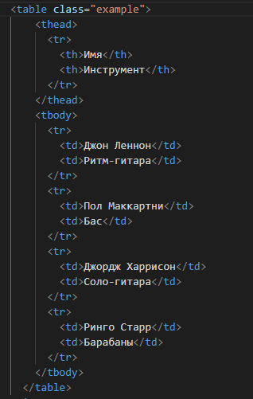

Таблицы в HTML
Таблицы в HTML были созданы, чтобы обеспечить простой способ разметки структурированных табличных данных и для отображения этих данных в форме, которую пользователь легко читает и воспринимает.
Таблицы применяются для группирования и упорядочивания только табличных данных.
А это любой тип содержимого, который может быть семантически расположен в строках и столбцах.
Каждая таблица состоит нескольких элементов.
Ячейка
Ячейка — минимальная единица таблицы, в ячейке располагаются сами данные, это может быть текст, картинки или что-то ещё.

Строка
Строка — совокупность ячеек, расположенных рядом друг с другом по горизонтали.
Колонка
Колонка — совокупность ячеек, расположенных друг под другом по вертикали.
Минимальная таблица состоит из одной единственной ячейки.
Кроме того, таблица может быть с единственной строкой или единственной колонкой.
Кроме этих перечисленных элементов таблица может содержать и другие не обязательные элементы.
Заголовок таблицы
Заголовок таблицы — текстовая строка, предназначенная для названия таблицы или её описания.
Ячейка заголовка
Ячейка заголовка — ячейка, которая применяется для обозначения заголовка колонки или строки таблицы.
Браузеры, как правило, текст в такой ячейке отображают жирным начертанием и выравнивают по центру.
Создание таблицы
Построение таблицы в HTML требует определённой структуры:
-
Для добавления таблицы на веб-страницу используется элемент <table>.
Он служит контейнером для элементов, определяющих содержимое таблицы. - Формирование таблицы происходит по строкам — вначале мы создаём строку с помощью элемента <tr> (от англ. «table row» - строка таблицы)
- Затем уже внутрь <tr> добавляем нужное число ячеек через элемент <td> (от англ. «table data» - табличные данные).
Оба элемента обязательны, даже если у нас в таблице только одна ячейка.
Вместо <td> допускается использовать элемент <th> (от англ. «table header» - заголовок таблицы).
Текст в ячейке, оформленной с помощью <th>, отображается браузером шрифтом жирного начертания и выравнивается по центру ячейки.
В остальном, разницы между ячейками, созданными через <td> и <th> нет.
Синтаксис
- открыть <table>;
- добавить строки через <tr>;
- добавить обычные ячейки через <td> или заглавные ячейки через <th>.
Эта иерархия обязательна и все три элемента необходимы для построения таблицы.
При написании кода вам нужно определить ячейки своей таблицы слева направо и так до низу.
| Джон Леннон | Ритм-гитара |
| Пол Маккартни | Бас |
| Джордж Харрисон | Соло-гитара |
| Ринго Старр | Барабаны |
Как вы можете видеть, таблица в HTML является довольно многословной: много тегов для всего нескольких строк данных.
Вид таблицы настраивается с помощью CSS, в том числе цвет и толщина рамки для того, чтобы показать границы ячеек.
Особенности таблиц
-
Размеры таблицы изначально не установлены и вычисляются на основе содержимого ячеек.
Например, общая ширина определяется автоматически, исходя из суммарной ширины содержимого ячеек.
-
Максимальная ширина таблицы — это, как правило, всё доступное пространство по ширине.
Большой текст внутри ячеек переносится и форматируется браузером так, чтобы таблица заняла всю ширину. Но бывают исключения, когда внутри ячеек добавляются широкие картинки, в таком случае ширина таблицы может превысить ширину окна браузера и появится горизонтальная полоса прокрутки.
-
Содержимое ячеек по умолчанию выравнивается по центру вертикали.
Если содержимое ячеек различается по объёму, то в одной ячейке снизу и сверху текста появится пустое пространство.
Объединение ячеек
Мы пока рассмотрели достаточно простые таблицы, в которых число ячеек в каждой строке и колонке одинаковое. Но порой встречаются таблицы, где в разных строках или колонках число ячеек различается.
Это требуется для создания сложных таблиц, где, к примеру, заголовок охватывает сразу несколько ячеек
Объединение ячеек по горизонтали colspan
Для объединения ячеек по горизонтали или, иными словами, по колонкам, применяется атрибут colspan, значением которого выступает число ячеек, требуемых для объединения.
К примеру, в первой строке таблицы нам нужно две ячейки, а во второй строке только одна. Вот так писать ошибочно.
Потому что это приведёт лишь к созданию «дыры» в таблице. Поскольку число ячеек в первой строке не совпадает с числом ячеек во второй строке
Теперь мы добавляем атрибут colspan к элементу <td> (или к <th>, если это требуется) со значением 2 и получаем одну ячейку, ширина которой равна ширине двух ячеек.
Результат использования colspan
Объединение ячеек по вертикали rowspan
Аналогично обстоит дело и с атрибутом rowspan, который объединяет ячейки по строкам или по вертикали, иными словами.
В данной таблице установлено три колонки и три строки. Первые две ячейки объединены по вертикали, а следующие две — по горизонтали.
Заголовок таблицы
При большом количестве таблиц на странице, каждой из них удобно задать своё название.
Для этой цели в HTML существует специальный элемент <caption>, который устанавливает текстовый заголовок
Он располагается сверху таблицы по центру. Его ширина не превышает ширины таблицы, и в случае длинного текста он автоматически переносится на новую строку.
Элемент <caption> должен идти сразу же после открывающего тега <table>.
| 2023 | 2024 | 2025 | |
|---|---|---|---|
| Heфть | 43 | 51 | 79 |
| 3oлoтo | 29 | 34 | 48 |
| Дерево | 38 | 57 | 36 |
Удобство использования <caption> состоит в том, что заголовок, созданный с его помощью, оказывается привязанным к таблице и не выходит за условные рамки, ограниченные её шириной.
Заголовок для столбца или строки ячеек
Чтобы назначить заголовок для столбца или строки ячеек, применяется элемент <th>.
Он работает как элемент <td> в том смысле, что создаёт ячейку данных. Отличие элемента <th> от <td> заключается в том, что элемент заголовка таблицы <th> содержит смысловое значение, означающее что данные в ячейке являются заголовком, в то время как элемент <td> представляет собой лишь общий фрагмент данных.
Разница между этими двумя элементами похожа на разницу между заголовками (элементы от <h1> до <h6>) и абзацами (элемент <р>). Хотя содержимое заголовка можно поместить внутрь абзаца, не имеет смысла делать это. Потому что применение заголовка добавляет больше семантического смысла содержимому. То же самое верно и для заголовков таблицы.
Заголовки таблицы могут быть задействованы в столбцах и строках; данные в таблице определяют, где заголовки уместны.
Атрибут scope
Атрибут scope помогает точно определить, какое содержимое связано с заголовком.
Атрибут scope со значениями col, row, colgroup и rowgroup у элемента <th> применяется к строке или столбцу. Наиболее используемые значения col и row.
- Значение col указывает, что каждая ячейка внутри столбца имеет непосредственное отношение к этому заголовку таблицы
- Значение row указывает, что каждая ячейка в строке относится непосредственно к этому заголовку таблицы.
Использование элемента <th>, наряду с атрибутом scope, чрезвычайно помогает экранным ридерам и вспомогательным технологиям понимать смысл таблицы. Таким образом, они также полезны для тех, кто просматривает веб-страницы с помощью этих технологий.
Кроме того, в зависимости от браузера, заголовки таблицы могут получить некоторый стиль по умолчанию, как правило, жирный и по центру.
| Название | Наличие | Кол-во | Цена |
|---|---|---|---|
| Не заставляйте меня думать Стив Круг | На складе | 1 | $30.02 |
| UX-дизайн. Практическое руководство по проектированию опыта взаимодействия Расс Унгер, Кэролайн Чендлер | На складе | 2 | $52.94 ($26.47 × 2) |
| Изучаем HTML5 Брюс Лоусон, Реми Шарп | Нет на складе | 1 | $22.23 |
| Пуленепробиваемый веб-дизайн Дэн Сидерхолм | На складе | 1 | $30.17 |
Превращение данных в таблицу — это лишь начало. Пока мы только немного прикоснулись к тому, как семантически добавить данные в таблицу, мы можем ещё много что сделать для определения структуры наших таблиц.
Атрибут headers
Атрибут headers очень похож на атрибут scope. По умолчанию, атрибут scope может быть использован только для элемента <th>.
В случае ячеек, вроде элементов <td> или <th>, которые надо связать с другим заголовком, в игру вступает атрибут headers.
Значение атрибута headers для элемента <td> или <th> должно соответствовать значению атрибута id в <th>, который связан с ячейкой.
<thead>, <tbody> и <tfoot>
Так же, как веб-страница может содержать «шапку» и «подвал», таблица может содержать головную, основную и нижнюю части. Как и всё в HTML, это чисто по семантическим причинам: предоставление большей структуры вашей таблице.
Элементы <thead> (шапка таблицы), <tbody> (тело таблицы) и <tfoot> (подвал таблицы) помогают структурно организовать таблицы.
Шапка таблицы, <thead>, обёртывает строку заголовка или строки таблицы, чтобы обозначить их шапкой. <thead> должен быть помещён в верхней части таблицы, после любого элемента <caption> и перед любым элементом <tbody>.
После <thead> могут идти элементы <tbody> или <tfoot>.
Изначально, элемент <tfoot> должен идти сразу после элемента <thead>, но HTML5 предоставил в этом свободу действий. Эти элементы могут теперь встречаться в любом порядке, но они никогда не должны быть родительскими элементами друг другу.
Элемент <tbody> должен содержать основные данные таблицы, в то время как <tfoot> содержит описание данных таблицы.
<thead>, <tfoot> и <tbody> представляют собой наборы строк. Как таковые, они являются прямыми детьми <table> и прямыми родителями одного или более <tr>. Короче говоря, они добавляют один уровень иерархии.
<thead> и <tfoot> используются в качестве резюме столбцов.
Давайте улучшим первую таблицу с <thead> и <tbody>:
| Имя | Инструмент |
|---|---|
| Джон Леннон | Ритм-гитара |
| Пол Маккартни | Бас |
| Джордж Харрисон | Соло-гитара |
| Ринго Старр | Барабаны |
Давайте также добавим <tfoot> к таблице:
| Имя | Инструмент |
|---|---|
| Имя | Инструмент |
| Джон Леннон | Ритм-гитара |
| Пол Маккартни | Бас |
| Джордж Харрисон | Соло-гитара |
| Ринго Старр | Барабаны |
Несмотря на то, что мы перед <tbody> добавили <tfoot>, он, тем не менее, появляется в конце.
Это исходит из того, что <tbody> может содержать много строк. Но браузер хочет отобразить нижнюю часть до получения всех (потенциально многочисленных) строк данных. Вот почему <tfoot> идёт сперва в коде.